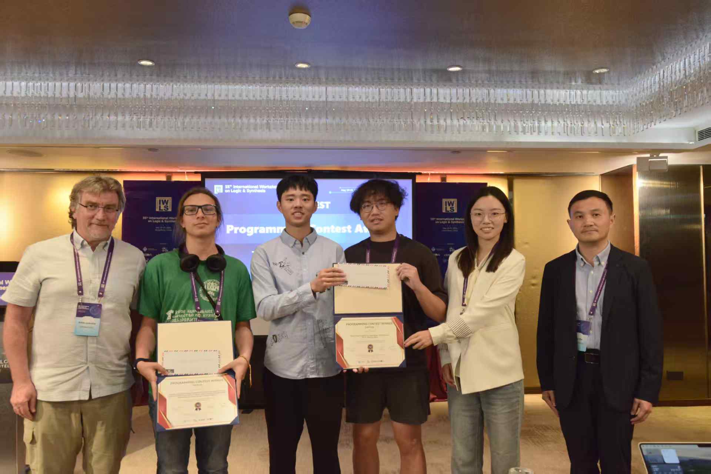
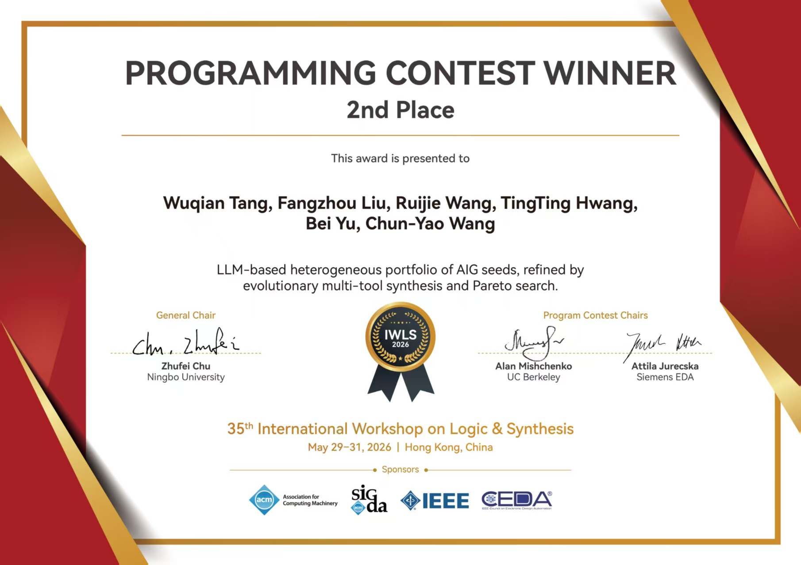

Awards & Honors · May 2026
Second Place, IWLS Programming Contest
International Workshop on Logic & Synthesis
Photos2



Certificates1


Awards & Honors · May 2026
International Workshop on Logic & Synthesis

